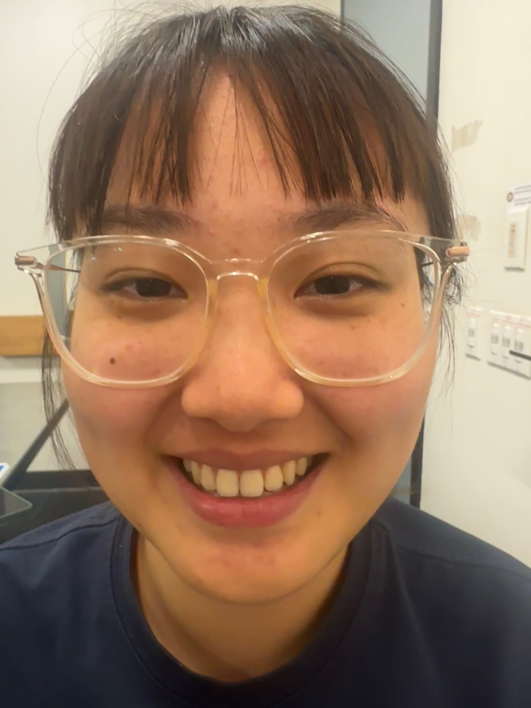
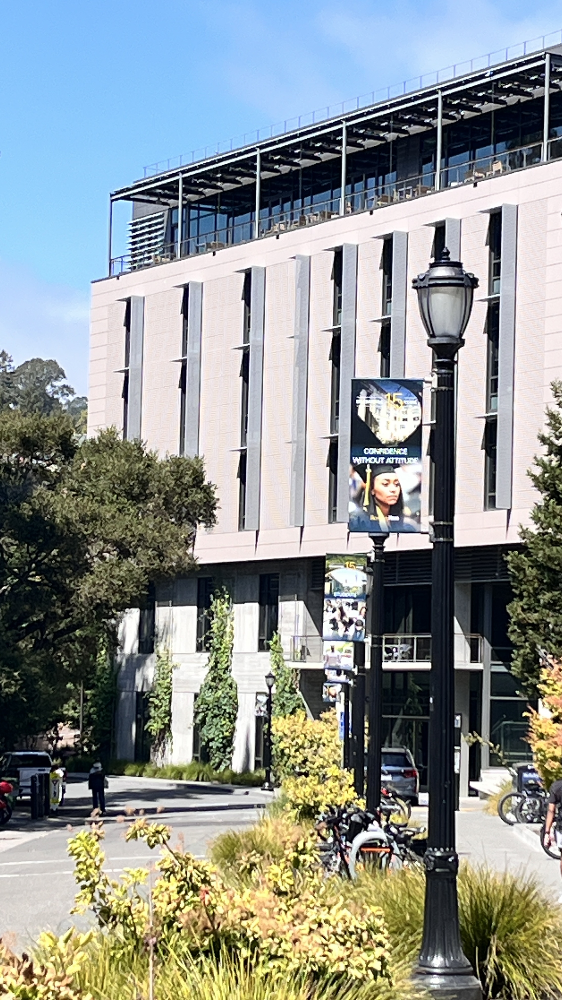
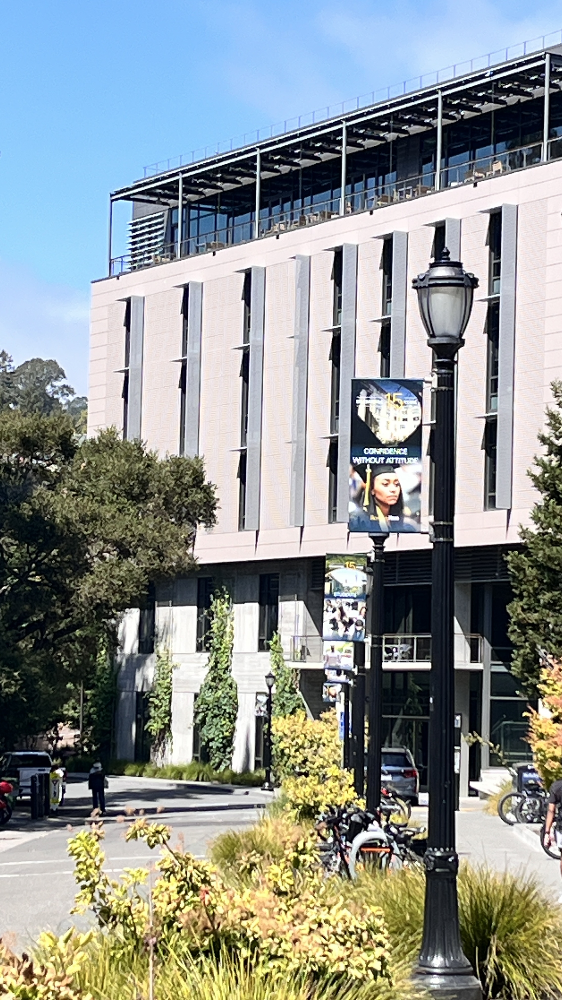

Part 1: Selfie - The Wrong Way vs. The Right Way

Pictures of my friend while studying. Very close up (Left) then 3 feet away with zoom (Right).
When you take a close-up selfie, the camera exaggerates features nearer to the lens. Stepping back keeps proportions more natural.
Part 2: Architectural Perspective Compression
 

Picture of Chou Hall up close (Left) vs. far away with zoom (Right).
Far away, the building appears flatter since all parts are a similar distance from the camera. Up close, depth and angles are more pronounced.
Part 3: The Dolly Zoom

A dolly zoom of a very cute bear plushie keychain.
A fun exercise, tested in many different settings.